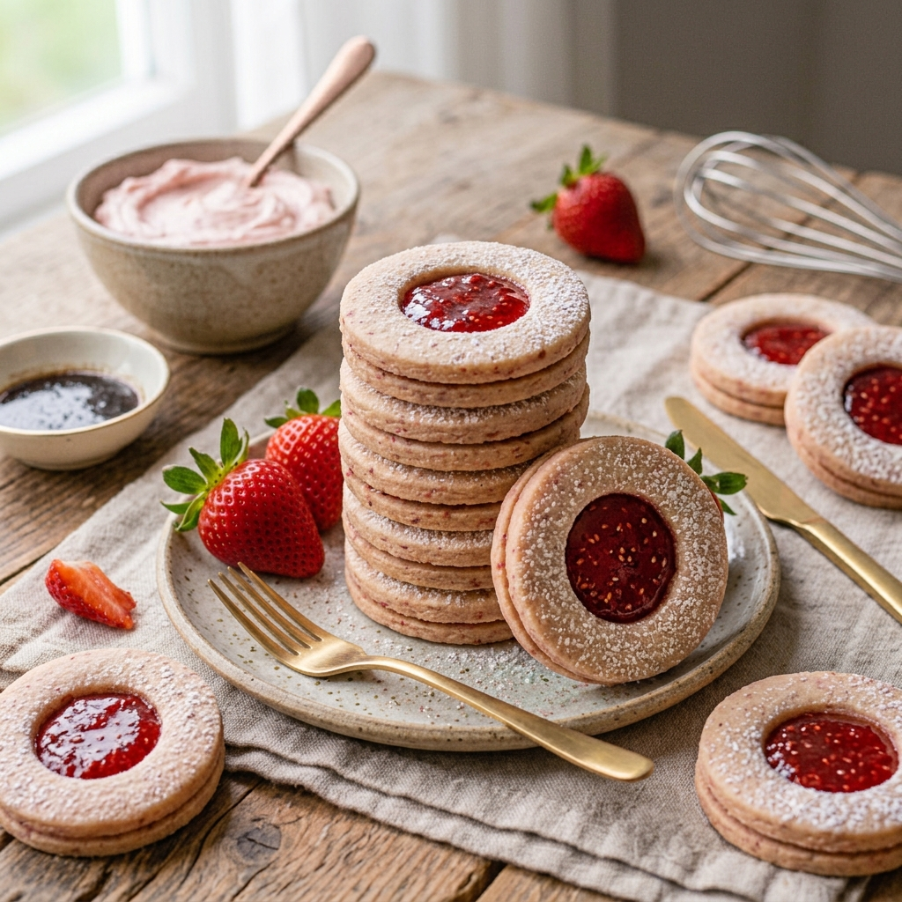

RECETA #022
Coronas de Corazón con Mermelada

Ingredientes
Rinde 20 piezas.
- ½ k de mantequilla
- 200 g de azúcar glas
- 600 g de harina, cernida
- 100 g de nueces finamente picadas
- 2 cucharadas de esencia de vainilla
- 2 huevos ligeramente batidos
- 1 taza de mermelada de zarzamora
- Azúcar glas, para espolvorear
Procedimiento
Bate la mantequilla y el azúcar hasta acremar. Agrega la harina y las nueces en dos tantos, continúa batiendo hasta obtener la consistencia de migas de pan.
Añade la esencia de vainilla y los huevos, y bate hasta formar una masa tersa. Retira la masa y forma una placa, envuélvela en papel adherible y refrigera durante dos horas, aproximadamente.
Extiende la masa sobre una superficie enharinada y corta la masa con un cortador de galletas redondo; a la mitad de las galletas córtales el centro con un cortador en forma de corazón. Colócalas en una charola ligeramente engrasada.
Hornea a 170°C durante 15 minutos o hasta que la parte de abajo esté ligeramente dorada. Retira las galletas del horno y deja enfriar sobre una rejilla.
Unta mermelada a las galletas redondas y coloca con cuidado las galletas con corazón encima.
Espolvorea con azúcar glas y deja reposar 10 minutos.